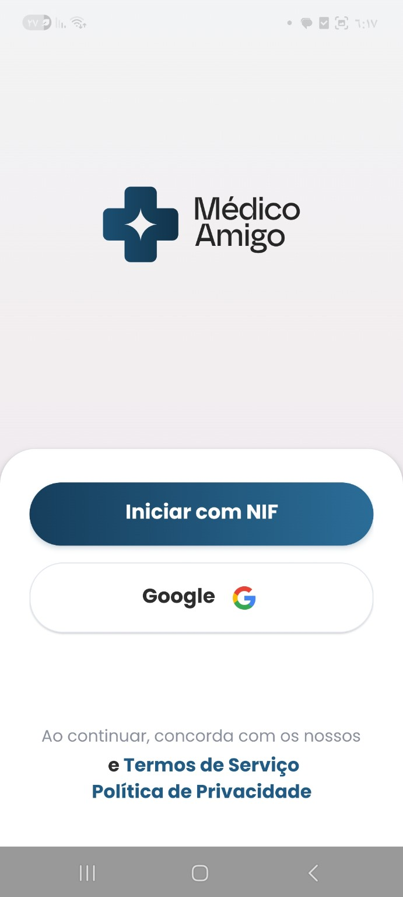
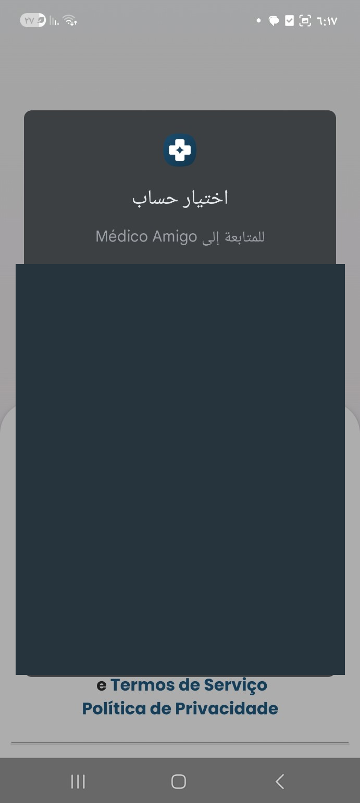
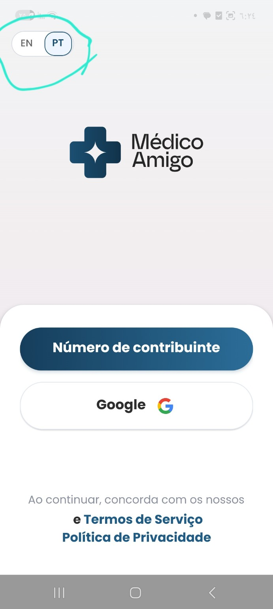
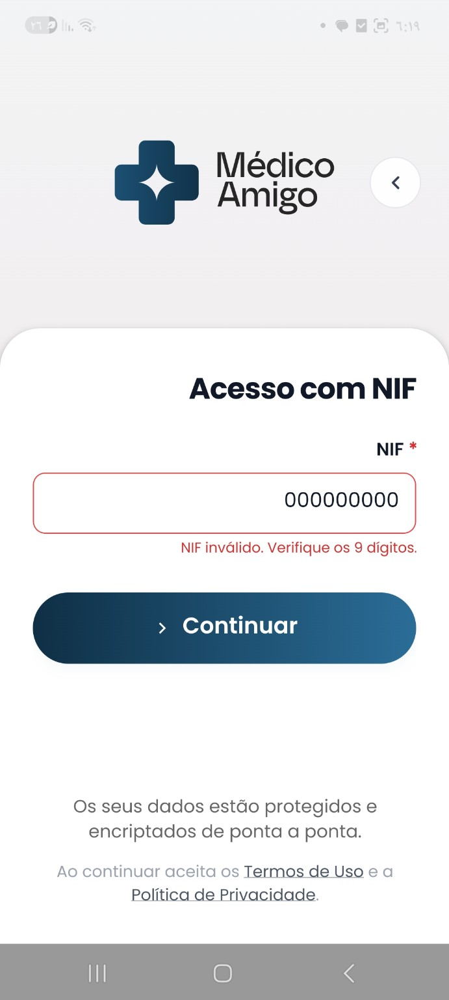
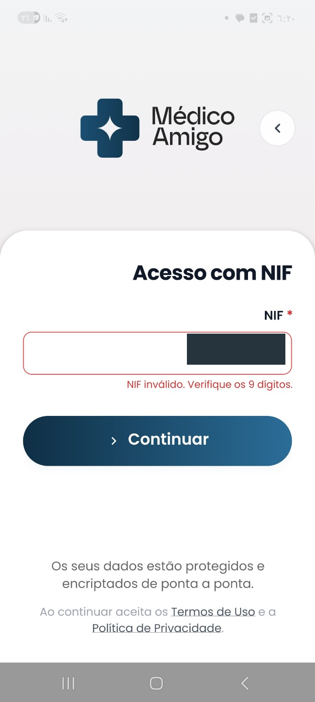
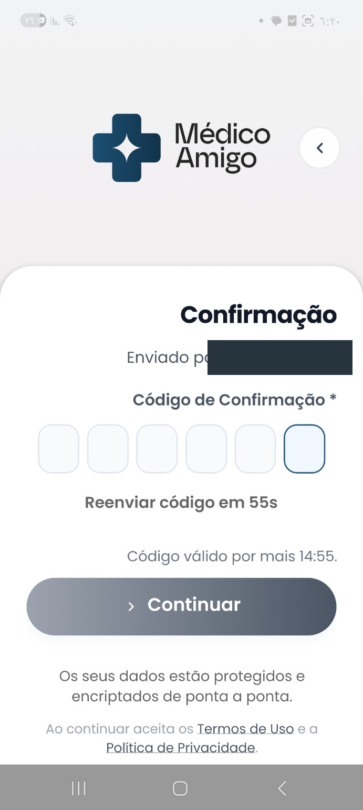

Khaled Alrefai · Android field notes · 23 November 2026Before the medicine request
Download the PDF · Jump to the proposed change

First visit. I could not see a language switch.
Google opened its account picker. I chose my account and returned to sign-in.
After reopening. The EN / PT switch appeared.I opened Médico Amigo to see how a patient requests medication. I reached the sign-in choices and the NIF verification flow. I do not have a Portuguese tax number of my own, so my review ends before the request.
Choosing my Google account
I tapped Google, picked my account and found myself looking at the same two buttons again. I saw no message. Should I retry, or did I need a NIF anyway? One line explaining the next step would have helped.
One step back
On the NIF entry screen I changed my mind and pressed Back to try Google. I ended up outside the app. I reopened it to get back to the two choices I had just seen.
Finding English on my second visit
I could not see a language switch the first time. After I removed the app from recent apps and reopened it, EN / PT appeared. The NIF button wording changed too. I wanted that language choice before I had to interpret the first prompt.
One change I would make
Show the NIF for review before requesting a code. I would give the patient a chance to correct a mistyped digit and make the effect of the next tap explicit.
Enter NIF → Review or edit → Send verification code
Khaled Alrefai · Android field notes · 23 November 2026Sign-in across two visits
Compare the upper-left corner in the first and third screenshots above to see what changed when I reopened the app.
Reading the status bar
The clock and connection icons looked faint on my phone. Stronger contrast would make them easier to read at a glance.
Khaled Alrefai · Android field notes · 23 November 2026Before sending a code
I liked that the field stopped at nine digits and gave feedback on invalid input. What surprised me was going from “Continuar” to a message saying a code had been sent. I had expected one more chance to review the digits. I stopped at that screen.

The field rejected the all-zero entry.
A validation message was also visible during my second entry.
Later I reached the code screen. The destination is covered.A chance to edit
Enter NIF → Review digits → Send verification code
Edit digits → Return to NIF entry
With a demo profile I would change a medicine selection before confirming it and check how the app tells me when a clinician receives the request.